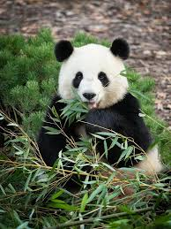

Bu web sitesi, Dev Panda hakkında gizemli ve büyüleyici dünyasına adım atmak isteyenler için hazırlanmış basit ve anlaşılır bir kaynaktır.
Çin'in güney-orta kesimindeki dağlık ve serin bambu ormanlarında yaşarlar. Nesli tehlike altındaki türler arasında yer alırlar.
Dev Panda için temsilî örnek görsel:

Diyetlerinin %99'u bambu filizleri ve yapraklarından oluşur. Bu özel beslenme biçimi onların yaşam döngüsünün temelini oluşturur.
Pandalar günün 10-12 saatini sadece yemek yiyerek geçirirler çünkü yedikleri bambunun besin değeri oldukça düşüktür.
Siyah-beyaz kürkleri ve sevimli halleriyle tüm dünyanın ilgisini çeken, Çin'e özgü devasa bir ayı türüdür. Nesli koruma altında olan özel canlılardandır.